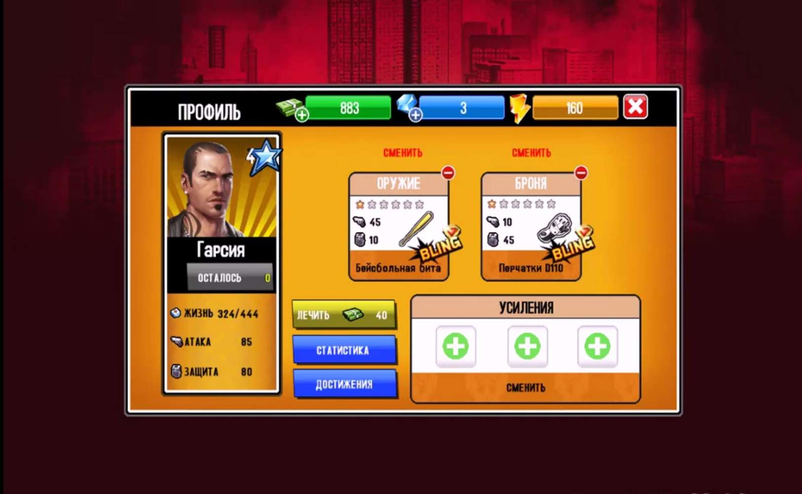
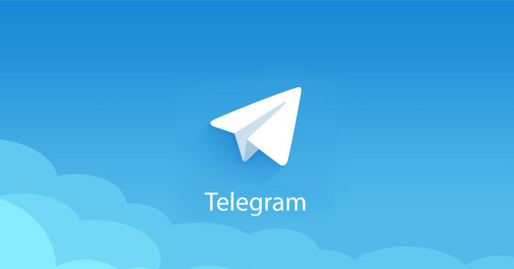

21-Век
Игры на старые телефоны.

Не многие знаю что раньше игры для телефона (java) весили меньше 1 мигобайта
Если вы изучаете java то советую покопаться в исходниках этих игр.
Телеграм

С каждым днём пользователей месенджера Telegram становится всё больше и на данный
момент их число превышает 2 800 900.Пологаю скоро все забудут про Viber и WatsApp
Телеграм
Удивительные требования выдвигает телеграм!Когда устанавливаешь мобильное приложение
Telegram на своё устройство (в меню которое показывает к чему получет доступ устанавливаемое приложение)
приложение Telegram получает достук чуть ли не ко всему телефону,а хотя....
МТС и новые услуги
Недавно на свет вышел новый тариф от мтс под названием Хайп вместе с этим тарифом
на свет появилась новая услуга от МТС(Авто продление) (Может эта услуга была и раньшя?Я точно не знаю,но
раньше я её не видел)Суть этой услуги в том что когда у вас заканчивается весь трафик интернета то автоматически с
вашего счёта на телефоне списываются деньги суммой примерно 100 р и вам начисляетсяя пакет интернета 500 МБ
В сети негде не ппишут как её отключить но много расссказов как баланс телефона опустошался от 100 р до 2000р
YouTube сходит с ума
YouTube-раньше я думал что это сайт с видео клипами и новой музыкой,но на сегоднешний день мобильным
приложением Ютуб пользуются больше 23 милионнов людей.У меня уже фантазии не хватает представить сколько
людей на сайт заходит.На сегоднешьний день с Ютубом творятся калосальные проблемы.Многию Ютуберы жалуются
что в Ютубе становится часто заметен контент для взрослых и на многих Ютуб каналах отписываюся подписчики
под предлогом что это заблокированные аккаунты.На сегодняшний день Ютуб это спасение родителей,родители
включают мультики своим детям и идут по своим делам.Родители не в курсе что после 3-й или 4-ой минуты
просмотра видео контент идёт для взрослых или непойми что.Самое ужастное это то что этих видео много
и их легко найти.Да,Ютуб удаляет эти видео но это не поможет избавится от них.